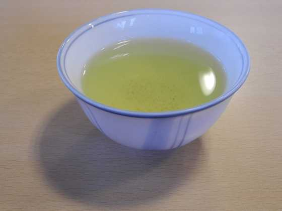
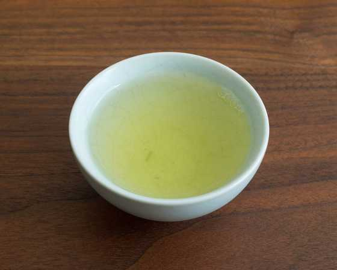
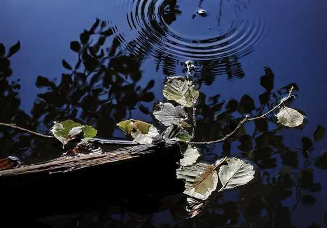
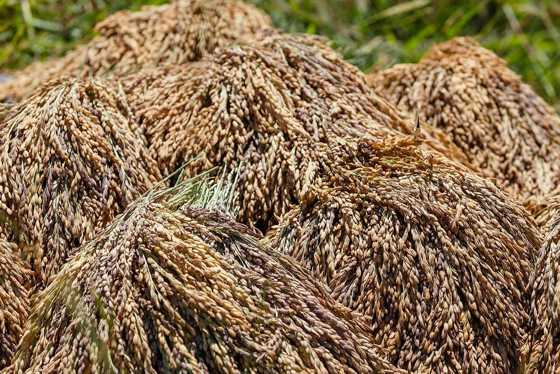
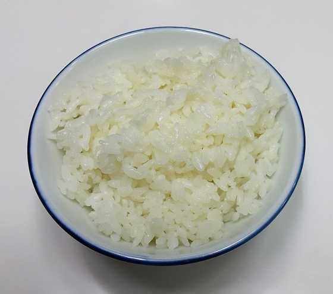
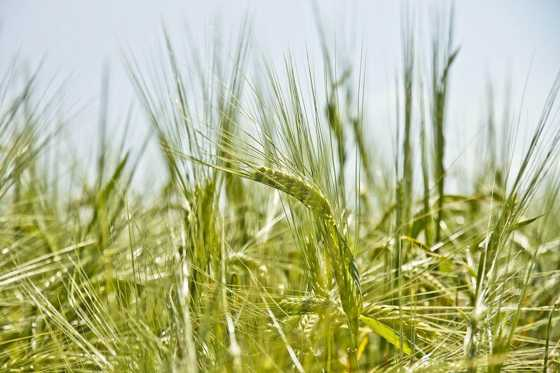

山口県下関市・薬膳茶と台湾カステラの喫茶
今日のからだの声を聞いて、
一杯のお茶を選ぶ。
水穀茶房は、薬膳師のオーナーが営む、薬膳茶と台湾カステラの喫茶です。
お店の由来・想い
薬膳師のオーナーと、からだに寄りそうお茶。
開店告知によると、水穀茶房は2026年1月に下関市富任町にオープンした喫茶です。10種類以上の薬膳茶と台湾カステラを中心に、お昼には季節の養生ランチも用意されています。オーナーは薬膳師で、お客様がからだの状態を伝えると、その人に合わせたオリジナルの薬膳茶もお願いできるとされています。
「水・穀・茶・房」という屋号の意味は、確認できていません。以下は制作側のイメージです。水と穀物とお茶という、毎日のからだをつくるものが集まる小さな部屋、といった雰囲気を、このページの色と写真で表現しています。
情報源: 結いの会(下関新店舗OPEN情報の投稿)/Instagram






メニュー・提供内容
薬膳茶、台湾カステラ、養生ランチ。
告知で確認できた提供内容は次のとおりです。品名・価格・提供時間などの詳細は準備中です。
薬膳茶
10種類以上。オーナーにからだの状態を伝えて、オリジナルの薬膳茶をお願いすることもできるとされています。
台湾カステラ
珍しい台湾カステラとして紹介されています。種類・価格は準備中。
季節の養生ランチ
お昼に、季節に合わせた養生ランチを用意。内容・価格は準備中。
営業時間・定休日
開店時の告知には11時〜18時半とありましたが、現在の営業時間・定休日は準備中です。





口コミ
こんな声が聞こえてきそうなお店です。
イメージ例
以下は制作側が作成したイメージ例で、実際のお客様の声ではありません。
体調を話したら、それに合わせてお茶を選んでもらえて、ほっとしました。
ご来店のお客様(イメージ)
ふわっとやさしい台湾カステラと、あたたかいお茶でゆっくりできました。
ご来店のお客様(イメージ)
お昼の養生ランチで、午後も軽やかに過ごせそうな気がしました。
ご来店のお客様(イメージ)
アクセス
お店のご案内
| 所在地 | 〒759-6613 山口県下関市富任町5丁目19-1 |
|---|---|
| 電話 | 準備中 |
| 営業時間 | 準備中 |
| 定休日 | 準備中 |
| SNS | Instagram @suikokusabo |
営業時間・メニュー・価格は変更されることがあるため、掲載せず「準備中」としています。最新情報はInstagramをご覧ください。